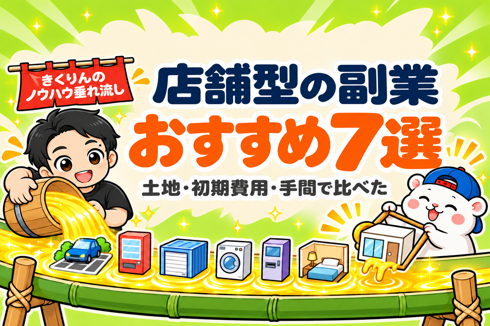

店舗型の副業を7つ、初期費用と準備の手間で比べてお伝えします。
店舗型の副業には、週末だけの飲食店のように、あなたがお店に立つものもあります。
でも、会社員の副業に向いているのは、人がいなくても回るお店です。
平日の昼間、あなたは会社にいるからです。
この記事では、人がいなくても回る7つを比べます。
- 駐車場
- 自販機
- トランクルーム
- コインランドリー
- 外貨両替機
- 民泊
- レンタルスペース
では、どれを選べばいいのでしょうか?
答えは、3つの質問で決まります。
- 土地を持っているか
- 初期費用を、いくら出せるか
- 準備の手間を、どれだけかけられるか
例えば、土地があるなら、駐車場や自販機が近道です。
土地がなく、出せる初期費用が200万円ほどまでなら、選べるのはほぼレンタルスペースか民泊です。
ぼくは、土地を持っていない会社員でした。
だから、借りた部屋でレンタルスペースの1号店を出しました。
初期費用は約90万円で、7か月で元が取れました。
先に、答えを5つ書いておきます。
- 店舗型の副業は、土地・初期費用・準備の手間の3つで選ぶ
- 土地がある人: 駐車場・自販機・トランクルーム
- まとまったお金がある人: コインランドリー・外貨両替機
- 土地もお金も小さい人: レンタルスペース・民泊
- 借りた場所で始めるなら、1年以内に元を取る
この記事を書いた人

この記事は、会社員のときにレンタルスペースの1号店を出し、23店舗まで増やしたきくりんが書いています。
1号店は約90万円で出して、7か月で元が取れました。
撤退した6店舗も、赤字のまま閉めた店はありません。
副業に向く店舗型は、人がいなくても回るお店
店舗型の副業は、お店を持って稼ぐ副業です。
その中でも副業に向くのは、お客さまが自分で使ってくれるお店です。
あなたが働いた時間ではなく、お店が働いた時間で収入が入ります。
7つとも、人を雇わずに回せます。
ちがうのは、最初に何にお金を払うかです。
| 副業 | 最初にお金を払うもの | 収入の形 |
|---|---|---|
| コインランドリー | 洗濯機・乾燥機と工事 | 洗濯と乾燥の料金 |
| トランクルーム | 区切った部屋か、建物 | 荷物をあずける月の料金 |
| 自販機 | 自販機(任せる形なら0円) | 売れた飲み物の一部 |
| 駐車場 | 土地(と精算の機械) | 駐車の料金か、決まった額の賃料 |
| 外貨両替機 | 両替機と、中に入れる両替のお金 | 両替の手数料 |
| 民泊 | 借りた部屋の家具・家電と消防の設備 | 1泊ごとの宿泊料 |
| レンタルスペース | 借りた部屋の内装と家具 | 部屋を時間で貸す料金 |
土地か大きな初期費用を出せる人ほど、準備の手間を人に任せやすくなります。
どちらもないなら、準備の手間を自分でかけて払います。
店舗型の副業7つを、同じ基準で比べる
7つを、初期費用・土地・準備の手間・運営の手間・元が取れるまでの5つで比べると、こうなります。
| 副業 | 初期費用 | 土地 | 準備の手間 | 運営の手間 | 元が取れるまで |
|---|---|---|---|---|---|
| 駐車場(運営会社に貸す形) | 0円の会社もある | いる | 少ない(会社と契約) | ほぼない(運営は会社) | 初期費用0円なら、回収はいらない |
| 自販機(飲料の会社に任せる形) | 0円(電気代は自分) | いる(土地か建物の前) | 少ない(会社に申し込む) | ほぼない(補充と集金は会社) | 初期費用0円なら、回収はいらない |
| トランクルーム | 建てる型 1,000万〜2,000万円/借りた部屋を区切る型 200万〜300万円から | 建てる型はいる | 多め(建築か、区切りの工事) | 少ない | 3〜10年ほど(推定) |
| コインランドリー | 2,000万〜2,500万円 | いらない(店舗を借りる) | 多め(物件・機械・工事・届け出) | 少ない(清掃と集金) | 7〜10年ほど |
| 外貨両替機(運営会社に任せる形) | 公表なし(1台約1,000万円を目安とする会社も) | いらない(設置場所は会社が探す形も) | 少なめ(場所は会社が探す形も) | 少ない(補充と回収は警備会社) | 公表なし |
| 民泊(借りた部屋) | 100万〜300万円ほど(推定) | いらない(部屋を借りる) | 多い(物件・家具・消防・届け出) | 多め(名簿・苦情・清掃) | 1〜3年ほど(推定) |
| レンタルスペース | 約27万〜214万円(ぼくの店) | いらない(部屋を借りる) | 多い(物件探し・契約・設営) | 1日0〜数分(連絡はAI・清掃は外注) | 早い部屋で7か月・まん中で11か月 |
レンタルスペースの欄だけは、ぼくの店の数字です。
ほかは、メーカーや運営会社の公開資料の目安です。
広さも場所もちがうので、目安として見てください。
この表で、いちばん大きな分かれ目は「土地」の列です。
土地がいる3つは、土地を持っていない人には、ほぼ選べません。
そして、運営の手間は、民泊のほかはどれも小さめです。
ちがいは、土地・初期費用・準備の手間のどれで払うかです。
土地がある人は、駐車場・自販機・トランクルーム
土地を持っているなら、いちばん小さな準備の手間で始められます。
土地が、お店の大部分の役をしてくれるからです。
駐車場は、運営会社に貸せば初期費用0円から
駐車場は、運営会社に土地をまとめて貸す形なら、準備も運営も、手間はほぼありません。
運営会社が機械を入れて運営し、あなたには毎月決まった額の賃料が入ります。
初期費用0円で始められる会社もあります。
ただし、土地の固定資産税などの税金は、あなたが払います。
自分で機械を入れて運営する形もありますが、機械のお金と運営の手間がかかります。
自販機は、飲料の会社に任せれば0円から
自販機は、飲料の会社に任せる形なら、設置のお金はかかりません。
補充と集金は、会社がしてくれます。
あなたが出すのは、場所と電気代です。
収入は、売れた飲み物の一部です。
割合は、会社と場所で決まります。
ただ、自販機の数はへり続けています。
日本の自販機は、2014年の約504万台から、2025年は約388万台になりました(日本自動販売システム機械工業会)。
人が通る場所かどうかで、売上が大きく変わります。
トランクルームは、建てる型で1,000万〜2,000万円
トランクルームは、荷物をあずける部屋を貸すお店です。
土地に建てる型は、建築費が1,000万〜2,000万円ほど(運営会社の公開資料)。
運営会社にまとめて任せると、集客や賃料の回収まで会社がしてくれる形もあります。
コンテナを地面に固定して倉庫として使うと、建物のあつかいになり、建築確認がいります。
借りた部屋を区切る型なら、土地はいりません。
それでも、設備だけで最低200万〜300万円ほどは見ておくのが目安です(中小機構)。
全部の区画が埋まるまで時間がかかりやすく、元が取れるまでは3〜5年ほどを見ておくと安心です(推定)。
3つとも、土地を持っている人に向いています。
土地がない人には、選びにくい副業です。
まとまったお金がある人は、コインランドリーか外貨両替機
土地がなくても、まとまったお金を出せるなら、運営の手間が少ないお店を持てます。
お金で、機械と人の手を買うからです。
コインランドリーは、2,000万〜2,500万円
コインランドリーは、初期費用が大きいかわりに、運営の手間が少ないお店です。
例えば、業務用の洗濯機のメーカーの資料では、15〜20坪の小さなお店で2,000万〜2,500万円。
そのうち、機械だけで1,300万円からです。
元が取れるまでは、7〜10年ほどと書かれています。
別のメーカーの資料でも、2,500万円で、回収は約7年でした。
そのかわり、人がいなくても回ります。
資料の例のオーナーさんは、やることは清掃と集金だけでした。
土地がなくても、店舗を借りて始められます。
始めるときは、お店のある地域の保健所に届け出をします。
やめたとき、機械は残ります。
ただし、元が取れるまでの年数が長いので、店舗を借りるなら契約の年数も先に確かめてください。
外貨両替機は、訪日客の多い場所で
外貨両替機は、外国のお金を円に替える機械です。
日本に来た外国の人が、空港の外でも両替できるように、ホテルや駅の近くに設置されています。
日本に来る外国の人は、2025年に約4,268万人で、これまででいちばん多くなりました(日本政府観光局)。
運営会社に任せる形なら、準備も運営も、手間は少なめです。
例えば、ある運営会社の形では、設置場所は会社が探し、現金の補充と回収は警備会社がします。
オーナーがすることは、毎日の報告と、入金を確かめることだけです。
収入は、両替の手数料です。
ただ、機械の値段も、オーナーの取り分の割合も、各社とも公式には出していません。
展示会の出展社紹介では、1台あたり約1,000万円(機械と、中に入れるお金)を目安にしている会社もありました。
外貨両替は、許可なしで始められます。
そのかわり、1か月の両替が100万円をこえると、財務省への報告がいります(日本銀行を通して出します)。
1回200万円をこえる両替では、相手の本人確認もいります。
2つとも、まとまったお金があって、毎日の時間はあまり使えない人に向いています。
土地もお金も小さい人は、レンタルスペースか民泊
土地も大きなお金もないなら、部屋を借りて始めるお店が残ります。
そのかわり、準備の手間で払います。
レンタルスペースは、借りた部屋を時間で貸す
レンタルスペースは、借りた部屋を時間で貸すお店です。
土地も大きな機械もいらないので、7つの中でいちばん小さい初期費用で始めやすいお店です。
予約は、ポータルサイトが受けてくれます。
ポータルサイトとは、お店を探す人が集まる予約のサイトです。
美容室ならホットペッパービューティー、飲食店なら食べログ。
レンタルスペースでは、スペースマーケットやインスタベースです。
ぼくの店では、初期費用は約27万〜214万円でした。
いちばん安い27万円は小さな貸し会議室、いちばん高い214万円は鏡と工事が要るダンススタジオです。
| ぼくの店の実数 | |
|---|---|
| 初期費用 | 約27万〜214万円(1号店は約90万円) |
| 軌道に乗った部屋の利益 | 月平均 約10万円 |
| 元が取れるまで | 早い部屋で7か月・まん中で11か月 |
| オープン後の作業 | 1日0〜数分(清掃は外注) |
準備の手間は、物件探し・契約・設営の3つです。
オープンしたあとの運営は、電話も返事もAIに任せられます。
例えば、ぼくの店では、30日間の電話18件がすべて自動で対応できました。
ただし、弱いところも2つあります。
1つ目は、初期費用が戻ってこないことです。
内装と家具に使うお金なので、やめても機械のようには残りません。
2つ目は、部屋が借りものであることです。
大家さんの許可がいりますし、ビルの再開発などで出ていくこともあります。
ぼくも、6店舗を撤退しました。
だから、ぼくは1年以内に元を取ることを目安にしています。
撤退した6店舗も、赤字のまま閉めた店はありません。
レンタルスペースが副業に向いているかは、こちらにくわしく書きました。

民泊は、年180日までの形と、1年中できる形がある
民泊は、借りた部屋などに人を泊めるお店です。
始め方は、大きく2つあります。
| 形 | 手続き | 泊められる日数 | 住宅だけの地域 |
|---|---|---|---|
| 届け出の民泊(住宅宿泊事業法) | 届け出 | 1年で180日まで | できる(条例の制限あり) |
| 旅館業(簡易宿所の許可) | 許可 | 上限なし | できない |
1年を通して営業したい人は、旅館業の許可をとる形が多くなります。
数で見ると、届け出の民泊は約4.3万件(2026年9月)、簡易宿所は約4.8万施設(2026年3月末)です。
簡易宿所には、ゲストハウスなども入ります。
借りた部屋で始めるなら、家具・家電・消防の設備と、部屋の契約のお金で、100万〜300万円ほどが目安です(推定)。
運営の手間は、7つの中で多いほうです。
泊まる人の名簿をつくる、近所からの苦情に対応する、清掃をする。
届け出の民泊で、あなたが家にいない形なら、管理の会社に任せることが法律で決まっています。
トラブルと、これからの規制
民泊は、近所とのトラブルがニュースになりやすいお店です。
例えば、東京の新宿区では、届け出の民泊への苦情が、令和3年度の70件から、令和7年度は924件にふえました。
中身は、ごみ・騒音・たばこなどです。
そして、規制は強くなる流れです。
| いつ | どこ | 中身 |
|---|---|---|
| 2026年5月29日 | 大阪市 | 特区民泊の新しい受付を終了(それまでの施設は営業を続けられる) |
| 2026年7月 | 国(観光庁など) | 条例で、1年を通して営業させない規制もできると、自治体に伝えた |
| 2026年12月16日から | 東京都豊島区 | 届け出の民泊は、区内全域で年120日まで。区の約7割の地域では、新しく始められない |
| 2027年6月の予定 | 東京都新宿区 | 住宅の地域では、新しい民泊を原則禁止にする案 |
借りた部屋で始めると、あとから条例が変わって、営業できる日がへることがあります。
始める前に、その地域の条例の動きを確かめてください。
旅行の人をむかえるのが好きで、泊められる物件がある人に向いています。
あなたに向くのはどれ?3つの質問で選ぶ
最後に、3つの質問で選んでみてください。
上から順に答えて、最初に「はい」になったところが、あなたに向く副業です。
| 質問 | 「はい」なら |
|---|---|
| 1. 土地を持っている? | 駐車場・自販機・トランクルーム |
| 2. 初期費用を1,000万円をこえて出せる? | コインランドリー・外貨両替機 |
| 3. 準備の手間(物件探しと設営の数週間)をかけられる? | レンタルスペース・民泊 |
3つとも「いいえ」なら、まだ始める時期ではないのかもしれません。
それも、立派な答えです。
店舗型の副業で失敗する3つのパターン
店舗型の副業の失敗は、3つのパターンに分かれます。
| パターン | 何が起きる | ふせぎ方 |
|---|---|---|
| 1. 売る側の数字だけで決める | 家賃・電気代・手数料を引くと、思ったより利益が出ない | 引いたあとの利益を、自分で計算する |
| 2. 場所を見ずに決める | お客さまが来ない・近くに同じお店がある | 決める前に、その場所に足を運ぶ |
| 3. 借りた場所で、回収を長く見る | 元が取れる前に、契約や再開発で終わる | 1年以内に元が取れるかで決める |
1つ目は、どの副業でも起きます。
上位に出てくる記事の多くは、機械や仕組みを売る会社が書いたものです。
数字は、売る側の目安として読んでください。
3つ目は、ぼくの話です。
ビルの再開発で、5店舗を撤退しました。
それでも赤字で終わらなかったのは、早く元を取っていたからです。
くわしい失敗の話は、こちらにまとめました。

よくある質問
Q1. 店舗型の副業で、いちばん儲かるのはどれですか?
額だけなら、大きなお金を払うものほど大きくなりやすいです。
ただ、副業で大事なのは、出したお金を何か月で取り戻せるかです。
ぼくの店のレンタルスペースは、早い部屋で7か月でした。
Q2. 会社員でもできますか?
できます。
7つとも、営業時間にお店にいる必要はありません。
ただし、給料のほかの所得が年20万円をこえると、確定申告がいります(国税庁 No.1900)。
Q3. 土地がなくてもできますか?
できます。
コインランドリーは店舗を借りて、レンタルスペースと民泊は部屋を借りて始められます。
外貨両替機も、設置場所を運営会社が探してくれる形があります。
トランクルームも、借りた部屋を区切る形があります。
Q4. 外貨両替を、個人でやっても大丈夫ですか?
大丈夫です。
外貨両替は、いまは許可なしで始められます(財務省)。
ただし、1か月の両替が100万円をこえると報告がいり、1回200万円をこえる両替では本人確認がいります。
Q5. 無人販売所(無人の古着屋など)はどうですか?
無人販売所は、物を売るお店です。
7つとちがって、商品を仕入れて、補充する運営の手間が毎週かかります。
物を売るのが好きな人に向いています。
まとめ: 店舗型の副業を選ぶ5つ
店舗型の副業は、どれも人がいなくても回ります。
選ぶときに押さえることは、5つです。
- 店舗型の副業は、土地・初期費用・準備の手間の3つで選ぶ
- 土地がある人は、駐車場・自販機・トランクルーム
- まとまったお金がある人は、コインランドリー・外貨両替機
- 土地もお金も小さい人は、レンタルスペース・民泊
- 借りた場所で始めるなら、1年以内に元を取る
今日やることは、3つです。
- 3つの質問に、はい・いいえで答える
- 向く副業の、月の利益を自分で計算する
- 近くで、その副業のお店を1つ見てみる
あなたは、土地・初期費用・準備の手間のどれで払いますか?
物件探しから、月いくら残るかの計算、出店、撤退まで。23店舗の数字といっしょに、教科書にぜんぶ書いています。
レンタルスペース経営の教科書

販売価格は3部売れるごとに2,000円ずつ値上がりします（上限あり）。内容・最新価格は販売ページをご確認ください。
▼もう1つの副業、AI社員だけのeBay輸出店の実録🐹

▼ブログ(レンスペ×eBay、全記事まとめ)